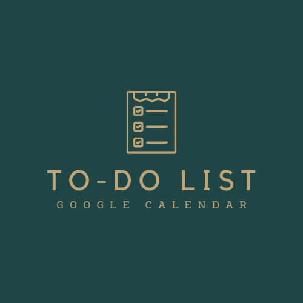
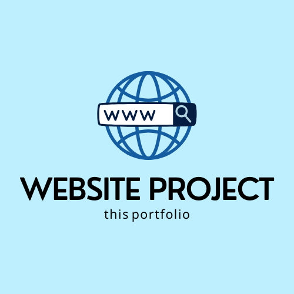

About Me
I'm Aayush Patel, a computer science major at James Madison University with a minor in Economics, combining tech skills with a broader view on how technology shapes our world. I'm curious about the possibilities in artificial intelligence and excited to keep exploring the field. Outside of class, I play soccer and tennis, where I enjoy the focus and strategy they bring. Growing up in Roanoke, Virginia, I've spent countless hours hiking in the Blue Ridge Mountains, picking up resilience and adaptability—qualities I bring to every project I take on.
Projects

